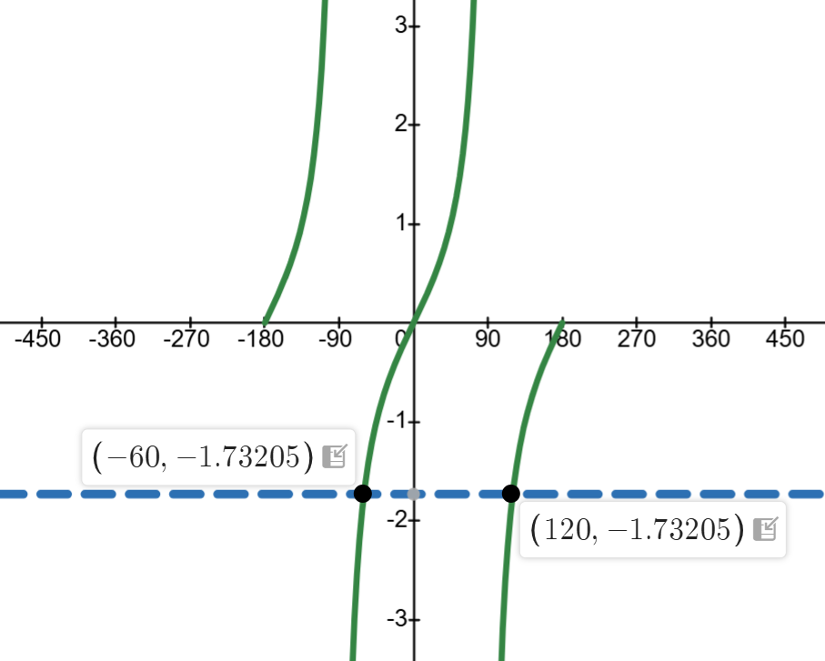

Given that tan 60° = √3 ≈ 1.7321...
Since tangent is an odd function: tan(−
θ) = −tan(
θ)
Therefore: tan(−60°) = −tan(60°) = −√3
So
θ = −60°
Using the periodic property: tan(
θ) = tan(
θ + 180°)
tan(−60° + 180°) = tan(120°) = −√3
So
θ = 120°
We can also find where the horizontal line
y = −√3 ≈ −1.73205 intersects the tangent graph.

Using the odd function property and periodic property, we find two angles where the tangent function equals −√3 in the range −180° ⩽ θ ⩽ 180°.